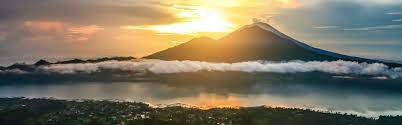 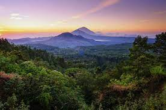 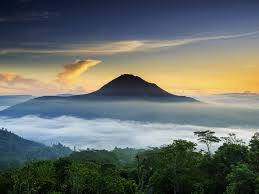
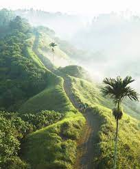 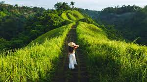 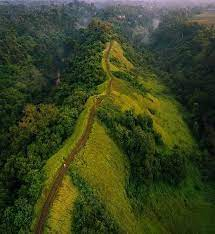
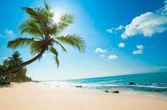 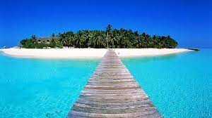 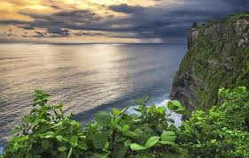
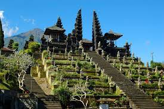 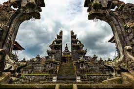 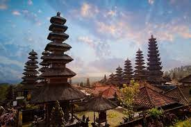
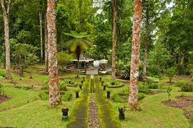 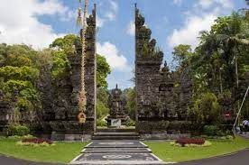 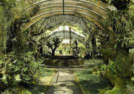
Балі в Індонезії - казковий «острів Богів», що входить до десятки найкращих тропічних курортів світу. Він омивається відразу двома океанами - Індійським та Тихим. На його невеликій території 5780 кв.км є білі пляжі з багатим підводним світом, густі джунглі та савани, природні парки з екзотичною флорою та фауною, гірські ліси з блискучими озерами, сплячі вулкани, шумливі водоспади та цілющі джерела. На Балі понад 20 000 стародавніх храмів і палаців, власна релігія - «балійський індуїзм», унікальна культура та ремесла, що зберігаються століттями. Він таїть безліч сюрпризів та відкриттів, завжди дарує незабутній відпочинок та масу яскравих вражень.